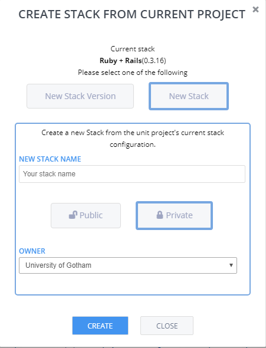
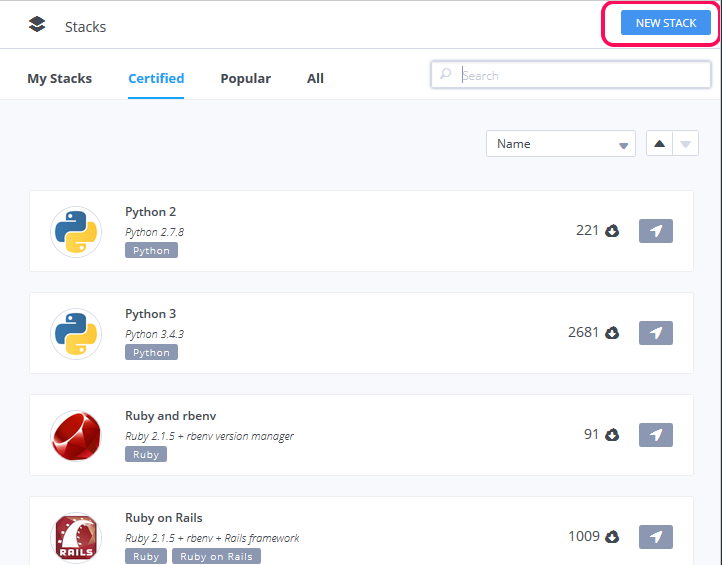

Create a Stack¶
You can create a new stack or stack version from a project or assignment in the IDE, or from the Stacks page in the Codio dashboard.
Note
Prior to creating a stack, read the information about Stacks so you are familiar with how stacks work in Codio.
Stack guidelines¶
Before you create a stack, review the following strategies and considerations to improve their usefulness:
Create a new project from a stack that most closely matches your requirements. You can also use the Base Stack and then install your own components.
Include a full description of the stack; this is the description that is displayed in the Stacks listing and the stack info (Projects > Stack > Info) in a project. For a reference, review some of the Codio Certified Pack long descriptions.
Create a new stack from the IDE¶
To create a new stack or new version of a stack from a project or assignment in the IDE, follow these steps:
Open the project in the IDE.
Click the Project tab on the menu bar and choose Stack > Create New.

By default, the stack is Private. To make it available to others, refer to Visibility and Ownership. We recommend that you set the owner to your organization.
Create a new stack from the dashboard¶
To create a new stack or new version of a stack from the Codio dashboard, follow these steps:
In the left navigation pane, Stacks.
On the Stacks page, click New Stack and point to your project.

Complete the required fields:
Stack Blueprint - Choose the Codio project to be used for the stack blueprint. Enter any part of the project name to view the blueprints in a drop-down list.
Name and Description - Enter a short name and a longer description for the stack. To add a more detailed overview of the stack, click the add a long description link. You can write the description using markdown.
Image - You can add an image to make your stack more instantly recognizable in the listing. The image should be square; the size will be reduced and appear in a circle.
Tags - You can add tags to the stack help ensure maximum search capabilities. Ideally, the tags should be component names. The autocomplete feature helps you find already defined tags to avoid duplication.
Click Create to generate the stack image (this may take a few minutes depending on the size of the image).
Note
You do not need to remain on the page while the stack image is being created; you may continue to other areas of Codio. However, the source project is not accessible until the stack has been created.
Sample template¶
Below is a sample template that can be modified for your stack.
# Title
Put the name of your Stack here.
## Using the Stack
Describe how the user should get started.
## Starter Pack
If there are related Starter Packs you have created from this Stack that include code files, detail them here.
## Components Installed
It can be helpful to others or even to you later on to describe the installed Components and versions.
## Configuration Files
Detail where any component configuration files can be found. As you install components from `Tools>Install Software` a log file of all this information will be opened.
## General Information
Include any general information on the use and operation of any installed components.
## Codio Documentation
We recommend you include useful links to the Codio Documentation.
##Stack Specific Links
Provide useful links on the Stack components.
Sample template from Codio Certified LAMP stack¶
# LAMP
## Using this Stack
This Codio Stack gives you a complete **LAMP** stack ready to use and with all services up and running.
## Related Stacks & Starter Packs
There are various other Stacks and Starter Packs that may be of interest. Please search the listing for
- Stack : **LEMP**
- Stack : **LAPP**
- Stack : **LAMP** + Composer
- Starter Pack : **Laravel** (LAMP + Composer + Laravel)
## Components Installed
This Stack contains the following major component versions
- **PHP** 5.5.9
- **Apache** 2.4.7
- **MySQL** 14.14 Distrib 5.5.46
## Configuration Files
You can find configuration files in the following locations
- **PHP config file** : `/etc/php5/apache2/php.ini`
- **Apache config** : `/etc/apache2/apache2.conf`
- **MySQL default config file** : `/etc/mysql/my.cnf`
## General Information
# Apache Server
Apache should be started by default. You can manually start, stop and restart it using the following terminal commands:
$ sudo service apache2 start
$ sudo service apache2 stop
$ sudo service apache2 restart
# MySQL
## Start, Stop, Restart the MySQL server
MySQL should be started by default. You can manually start, stop and restart the MySQL server using the following terminal commands:
$ sudo service mysql start
$ sudo service mysql stop
$ sudo service mysql restart
## Connecting to the MySQL monitor
Assuming the MySQL server is started, you can connect to it using `mysql` from the terminal. Exit using `ctrl+c`.
## Root Password
If you want to set the root password, use the following command from the terminal
mysqladmin -u root password NEWPASSWORD`
## Codio Documentation
Please be aware of the following useful links
- [How to Access your Box](https://docs.codio.com/develop/develop/ide/boxes/overview.html)
- [If your firewall only allows access to port 80](https://docs.codio.com/develop/develop/ide/boxes/ext-access.html)
- [Creating Codio menu items to avoid repetitive terminal commands](https://docs.codio.com/develop/develop/ide/boxes/runmenu.html#customizable-run-menu)
- [Using Git in Codio](https://docs.codio.com/common/develop/ide/editing/git.html#git)
- [Customizing the IDE settings](https://docs.codio.com/develop/settings/user-prefs.html#user-prefs)
- [Restarting your Box](https://docs.codio.com/common/develop/ide/boxes/restart-reset.html#restart-and-reset)
- [Creating multiple code editing panels in the IDE](https://docs.codio.com/common/develop/ide/workspace/panels.html#id1)
## Stack Specific Links
- [PHP](http://php.net)
- [Apache](http://httpd.apache.org)
- [MySQL](http://dev.mysql.com)
## Updating Components
If this Stack is not using any of the latest components, please email support@codio.com and we will update it.